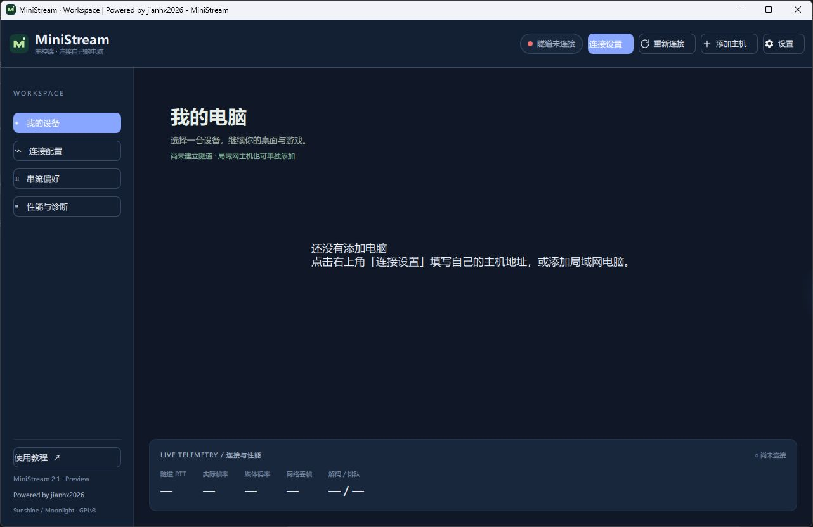
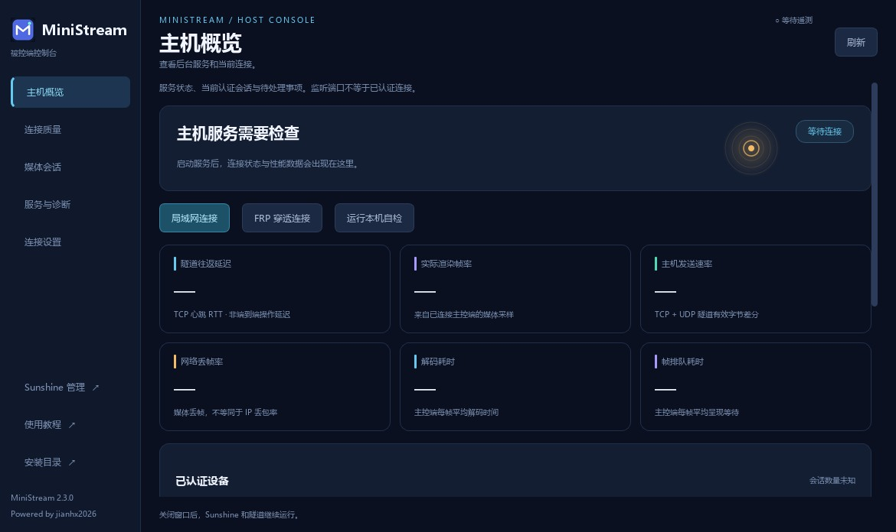
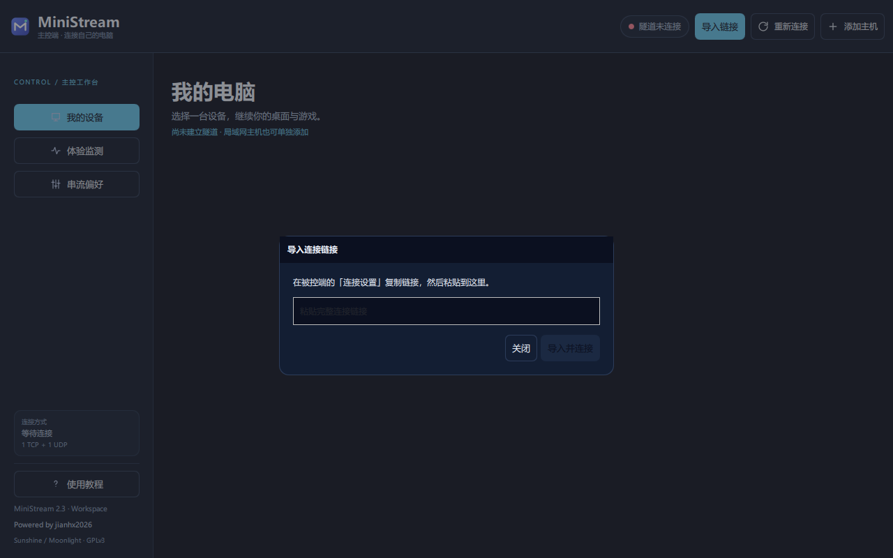

01 / CONTROLLER主控端
从设备，到会话。
添加自己的电脑，完成连接测试、配对与启动；串流过程中查看主控端实际收到的媒体遥测。
- 设备与配对地址、凭据与在线状态
- 媒体遥测帧率、网络丢帧、解码与排队
- 链路质量实时数据、趋势与事件
让家里的 Windows 游戏主机随时开局。同一网络自动选址，跨网可分别设置 TCP 与 UDP 的 FRP 端口，再用一条专属邀请连接。

截图为新版真实程序的离线或测试状态，不表示真实游戏性能。
主控端负责连接和操作。被控端集中管理口令、网络模板、自检和后台服务。
添加自己的电脑，完成连接测试、配对与启动；串流过程中查看主控端实际收到的媒体遥测。
选局域网或 FRP 模板，一键复制主控端要填的地址、端口与隧道口令。
在被控端设置新口令，再到主控端更新并重新连接。自动配对使用独立的 Sunshine 管理密码。
没有数据或样本过期时显示“—”。隧道 RTT 不等于端到端操作延迟，网络丢帧不等于 IP 丢包率。
点击侧边菜单或按自定义快捷键（默认 F12），查看连接通道与串流 RTT，切换鼠标模式、性能统计、显示方式或断开连接。
主控与被控使用原生 Windows 应用。以下沿用新版真实程序窗口，记录离线或测试状态；图片替换后仍保持相同说明。


这些截图不表示真实游戏性能，也不构成帧率、延迟或兼容性承诺。实际体验取决于硬件、驱动与网络链路。
mslink 将 Sunshine 与 Moonlight 的多路服务复用到一个 TCP 与一个 UDP 端口，适配端口受限的自有部署。
运行游戏与桌面
采集画面和声音
1 × TCP + 1 × UDP
局域网 / 自己配置的 FRP接收画面与声音
回传键鼠操作
同一网络优先使用主机局域网 IPv4。跨网络需要配置可达的 FRP 或其他可信网络，并分别处理 TCP、UDP 映射与防火墙。端口更少不代表延迟一定更低，UDP 代理的底层传输取决于实际配置。
下载目标 v2.3.2 · 发布清单与 SHA-256 以 GitHub Release 为准。
保存隧道口令与 Sunshine 管理信息，配置本机服务、端口和网络路径。
下载被控端填写自己的地址、端口与凭据，完成配对后从设备列表进入桌面或游戏。
下载主控端下载后与 GitHub Release 中的 SHA256SUMS.txt 对照，核对安装包完整性。
测试结论只覆盖实际执行的环境。工程测试通过，不等于所有 Windows 系统、硬件或真实游戏场景均已验收。
本机自动化测试 7 项全部通过，覆盖已实现的隧道与连接回归检查。
2.2 版本在受控回环环境覆盖 7 类弱网场景，共 50 项。
未完成干净 Windows 虚拟机安装验收，没有 ISO 或管理员环境限制下的完整验证。
不宣称 Windows 10/11 全部环境、所有 GPU/驱动组合或所有游戏均已测试；未完成高码率弱网与长时间跨网游戏的全面验收。实际帧率、延迟、键鼠兼容性与弱网表现取决于设备和链路。公网部署仍需正确配置认证、端口映射与防火墙。
局域网模式自动选取网卡地址。使用 FRP 时填入穿透后的 IPv4，并按实际映射填写公网端口。生成邀请后私发给装有主控端的 Windows 电脑，在浏览器中打开即可启动连接。
勾选自定义公网与内网端口映射，按 TCP、UDP 各填一组。把代理段合并到自己的 frpc 配置，再从外网主控端测试 TCP 和 UDP。
不是。仍需正确配置端口映射、防火墙、访问凭据与双向 UDP。先验证局域网，再逐项检查跨网链路；本机监听成功不代表公网可达。
不是。隧道 RTT 描述隧道链路往返，不等于端到端操作延迟；网络丢帧描述媒体接收情况，不等于 IP 丢包率。请结合双端事件、解码与排队时间排查。
2.1.4 已修复首次保存失败与启动失败残留 socket，2.3 延续修复。结束串流并保存配置后，两端配套升级；回退旧版或更换 Windows 用户可能需要重填 DPAPI 凭据。
不需要 MiniStream 云账户，也不要把 Sunshine 管理页公开作为日常串流入口。你仍需设置私有隧道凭据并完成 Sunshine 配对，只连接自己拥有或获授权的设备。
不等于。DPAPI 与文件 ACL 只降低本机文件泄露面，同一 Windows 用户仍可解密，内存中的口令也不受其保护。自定义隧道认证不能当作完整加密 VPN，公网请使用可信受保护的网络路径。
不代表。页面使用新版真实程序的离线或测试状态截图，用于展示界面与信息结构，不表示真实游戏性能。